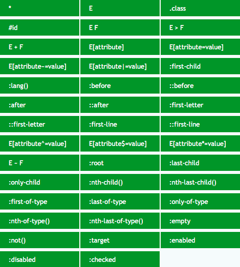

Agenda
Introduction
CSS1
CSS2
CSS3
More
Use Chrome DevTool
Use Case
Introduction

CSS1
CSS2
CSS3
More
Use Chrome DevTool
使用 Chrome 开发者工具快速找到 CSS 选择器
Use Case
Find Element(s)
write style, render HTML
automation testing/mock user behavior
extract data(use in crawler)
资料
玩转CSS选择器（一） 之 使用方法介绍
玩转CSS选择器（二） 之 浏览器支持，常见Bug，性能优化
http://css4-selectors.com/selectors/